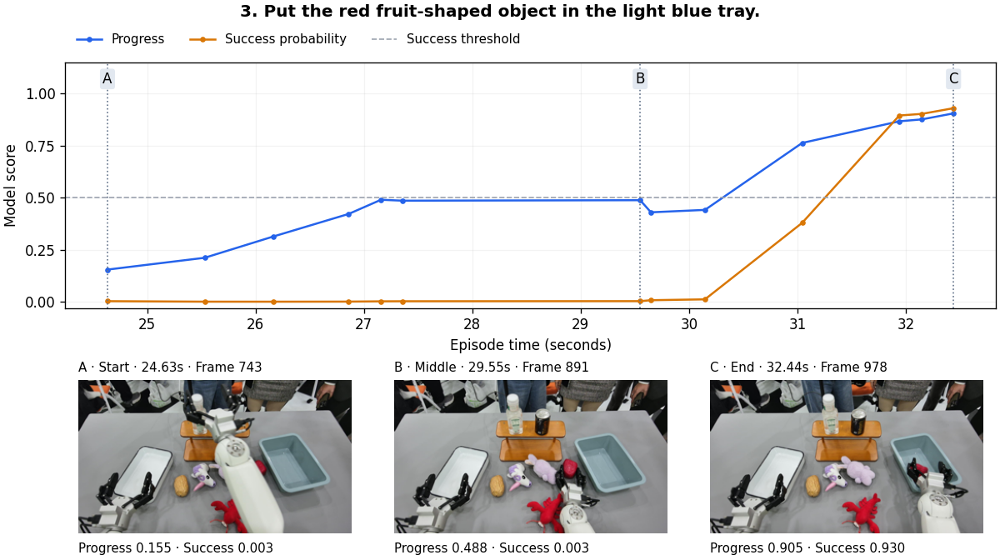
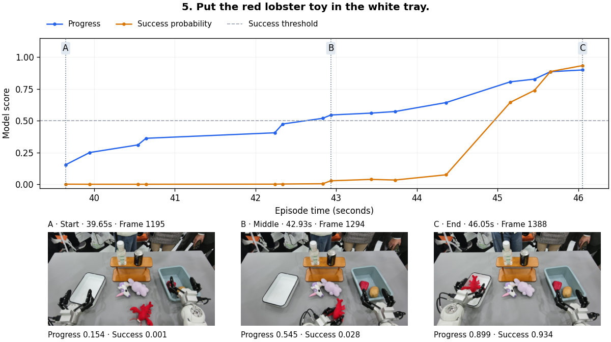
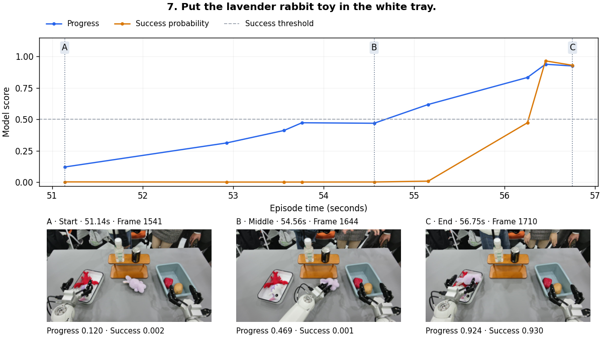
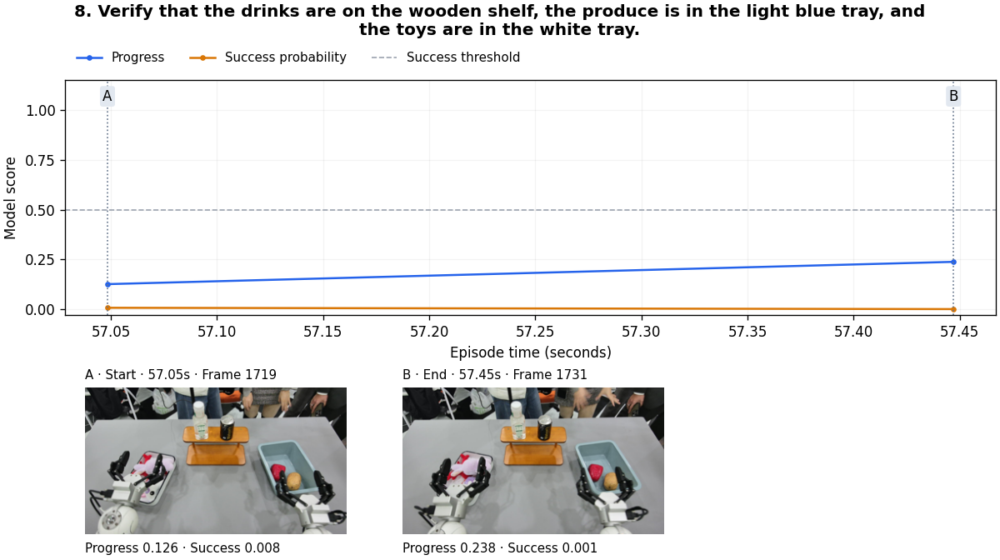
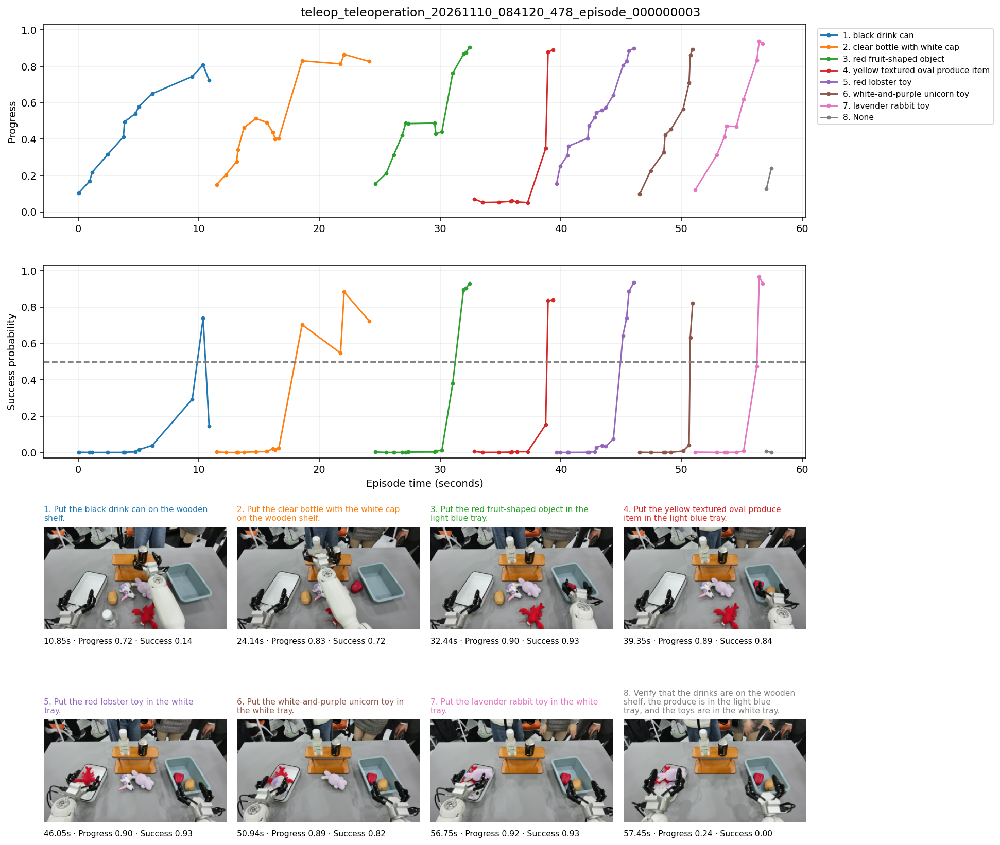

1. Put the black drink can on the wooden shelf.

Evaluated 84 selected head-camera frames across 8 instruction segments, spanning 0.03–57.45 seconds of episode time. 15 frames carry source annotation review flags. The model assigned success probability above 0.5 to 18 frames.
The 0.5 threshold is the example script’s decision threshold. Frame counts above this threshold describe model outputs. Ground-truth success rates and accuracy require human labels.
Each panel shows one instruction segment. Lettered markers on the plot match the selected head-camera images below it; the lines include every scored frame in that segment.







Start and end scores refer to the first and last selected frame carrying that instruction. These boundaries come from next-subtask annotations. They may omit the previous action’s final release or verification frame. Each score uses up to eight frames available by that point within its instruction segment.
| Instruction | Time range / frames | Progress start → end | Success at end / peak | Frames above 0.5 | Review flags |
|---|---|---|---|---|---|
| Put the black drink can on the wooden shelf. | 0.03–10.85s 12 frames | 0.103 → 0.722 | 0.145 / 0.738 | 1/12 | 1 |
| Put the clear bottle with the white cap on the wooden shelf. | 11.47–24.14s 14 frames | 0.150 → 0.827 | 0.723 / 0.883 | 4/14 | 2 |
| Put the red fruit-shaped object in the light blue tray. | 24.63–32.44s 13 frames | 0.155 → 0.905 | 0.930 / 0.930 | 3/13 | 2 |
| Put the yellow textured oval produce item in the light blue tray. | 32.84–39.35s 10 frames | 0.071 → 0.891 | 0.840 / 0.840 | 2/10 | 2 |
| Put the red lobster toy in the white tray. | 39.65–46.05s 15 frames | 0.154 → 0.899 | 0.934 / 0.934 | 4/15 | 2 |
| Put the white-and-purple unicorn toy in the white tray. | 46.55–50.94s 9 frames | 0.099 → 0.893 | 0.820 / 0.820 | 2/9 | 2 |
| Put the lavender rabbit toy in the white tray. | 51.14–56.75s 9 frames | 0.120 → 0.924 | 0.930 / 0.965 | 2/9 | 2 |
| Verify that the drinks are on the wooden shelf, the produce is in the light blue tray, and the toys are in the white tray. | 57.05–57.45s 2 frames | 0.126 → 0.238 | 0.001 / 0.008 | 0/2 | 2 |
These notes were supplied with the selected frames. They have not been independently relabeled for this evaluation.
Raw head stream /home/jiahe/system012/data/teleop_teleoperation_20261110_084120_478/episode_000000003/observation.images.cam_head.parquet. Every selected JPEG was verified against the raw frame’s timestamp and SHA-256. The inference input uses RGB images with the short side resized to 240 pixels before Qwen processing.
The gallery lists the original selected frames and their exact instructions. Changing the selected history can change a prediction. Instruction transitions reset the context, so progress values across different segments describe different tasks.
Frame and context manifest · All frame scores · All subtask summaries

| Frame / time | Head camera | Instruction and review notes | Progress / success |
|---|---|---|---|
| 2 0.03s |  | Put the black drink can on the wooden shelf. | 0.103 / 0.002 |
| 30 0.96s |  | Put the black drink can on the wooden shelf. | 0.170 / 0.000 |
| 36 1.16s |  | Put the black drink can on the wooden shelf. | 0.217 / 0.000 |
| 75 2.45s |  | Put the black drink can on the wooden shelf. | 0.316 / 0.000 |
| 114 3.75s |  | Put the black drink can on the wooden shelf. | 0.412 / 0.001 |
| 117 3.85s |  | Put the black drink can on the wooden shelf. | 0.496 / 0.002 |
| 144 4.74s |  | Put the black drink can on the wooden shelf. | 0.541 / 0.003 |
| 153 5.04s |  | Put the black drink can on the wooden shelf. | 0.580 / 0.015 |
| 186 6.14s |  | Put the black drink can on the wooden shelf. | 0.650 / 0.039 |
| 286 9.46s |  | Put the black drink can on the wooden shelf. | 0.744 / 0.293 |
| 313 10.36s |  | Put the black drink can on the wooden shelf. | 0.808 / 0.738 |
| 328 10.85s |  | Put the black drink can on the wooden shelf. Task boundary: confirm release and next target in the original head/wrist images. | 0.722 / 0.145 |
| 346 11.47s |  | Put the clear bottle with the white cap on the wooden shelf. Task boundary: confirm release and next target in the original head/wrist images. | 0.150 / 0.003 |
| 370 12.25s |  | Put the clear bottle with the white cap on the wooden shelf. | 0.204 / 0.001 |
| 396 13.13s |  | Put the clear bottle with the white cap on the wooden shelf. | 0.278 / 0.000 |
| 400 13.24s |  | Put the clear bottle with the white cap on the wooden shelf. | 0.343 / 0.000 |
| 415 13.74s |  | Put the clear bottle with the white cap on the wooden shelf. | 0.464 / 0.001 |
| 445 14.74s |  | Put the clear bottle with the white cap on the wooden shelf. | 0.513 / 0.004 |
| 472 15.64s |  | Put the clear bottle with the white cap on the wooden shelf. | 0.492 / 0.005 |
| 487 16.13s |  | Put the clear bottle with the white cap on the wooden shelf. | 0.437 / 0.020 |
| 493 16.33s |  | Put the clear bottle with the white cap on the wooden shelf. | 0.402 / 0.015 |
| 502 16.63s |  | Put the clear bottle with the white cap on the wooden shelf. | 0.402 / 0.023 |
| 560 18.56s |  | Put the clear bottle with the white cap on the wooden shelf. | 0.830 / 0.703 |
| 656 21.75s |  | Put the clear bottle with the white cap on the wooden shelf. | 0.814 / 0.547 |
| 665 22.04s |  | Put the clear bottle with the white cap on the wooden shelf. | 0.866 / 0.883 |
| 728 24.14s |  | Put the clear bottle with the white cap on the wooden shelf. Task boundary: confirm release and next target in the original head/wrist images. | 0.827 / 0.723 |
| 743 24.63s |  | Put the red fruit-shaped object in the light blue tray. Task boundary: confirm release and next target in the original head/wrist images. | 0.155 / 0.003 |
| 770 25.53s |  | Put the red fruit-shaped object in the light blue tray. | 0.211 / 0.001 |
| 789 26.16s |  | Put the red fruit-shaped object in the light blue tray. | 0.313 / 0.000 |
| 810 26.86s |  | Put the red fruit-shaped object in the light blue tray. | 0.422 / 0.001 |
| 819 27.16s |  | Put the red fruit-shaped object in the light blue tray. | 0.490 / 0.002 |
| 825 27.36s |  | Put the red fruit-shaped object in the light blue tray. | 0.485 / 0.002 |
| 891 29.55s |  | Put the red fruit-shaped object in the light blue tray. | 0.488 / 0.003 |
| 894 29.65s |  | Put the red fruit-shaped object in the light blue tray. | 0.430 / 0.008 |
| 909 30.15s |  | Put the red fruit-shaped object in the light blue tray. | 0.441 / 0.012 |
| 936 31.04s |  | Put the red fruit-shaped object in the light blue tray. | 0.763 / 0.379 |
| 963 31.94s |  | Put the red fruit-shaped object in the light blue tray. | 0.867 / 0.895 |
| 969 32.15s |  | Put the red fruit-shaped object in the light blue tray. | 0.876 / 0.902 |
| 978 32.44s |  | Put the red fruit-shaped object in the light blue tray. Task boundary: confirm release and next target in the original head/wrist images. | 0.905 / 0.930 |
| 990 32.84s |  | Put the yellow textured oval produce item in the light blue tray. Task boundary: confirm release and next target in the original head/wrist images. | 0.071 / 0.005 |
| 1011 33.53s |  | Put the yellow textured oval produce item in the light blue tray. | 0.052 / 0.001 |
| 1051 34.86s |  | Put the yellow textured oval produce item in the light blue tray. | 0.053 / 0.001 |
| 1081 35.86s |  | Put the yellow textured oval produce item in the light blue tray. | 0.058 / 0.002 |
| 1084 35.96s |  | Put the yellow textured oval produce item in the light blue tray. | 0.062 / 0.004 |
| 1096 36.36s |  | Put the yellow textured oval produce item in the light blue tray. | 0.055 / 0.004 |
| 1123 37.25s |  | Put the yellow textured oval produce item in the light blue tray. | 0.051 / 0.005 |
| 1168 38.75s |  | Put the yellow textured oval produce item in the light blue tray. | 0.349 / 0.153 |
| 1174 38.95s |  | Put the yellow textured oval produce item in the light blue tray. | 0.878 / 0.836 |
| 1186 39.35s |  | Put the yellow textured oval produce item in the light blue tray. Task boundary: confirm release and next target in the original head/wrist images. | 0.891 / 0.840 |
| 1195 39.65s |  | Put the red lobster toy in the white tray. Task boundary: confirm release and next target in the original head/wrist images. | 0.154 / 0.001 |
| 1204 39.94s |  | Put the red lobster toy in the white tray. | 0.250 / 0.000 |
| 1222 40.54s |  | Put the red lobster toy in the white tray. | 0.310 / 0.000 |
| 1225 40.64s |  | Put the red lobster toy in the white tray. | 0.362 / 0.000 |
| 1273 42.24s |  | Put the red lobster toy in the white tray. | 0.405 / 0.001 |
| 1276 42.34s |  | Put the red lobster toy in the white tray. | 0.474 / 0.002 |
| 1291 42.83s |  | Put the red lobster toy in the white tray. | 0.519 / 0.004 |
| 1294 42.93s |  | Put the red lobster toy in the white tray. | 0.545 / 0.028 |
| 1309 43.43s |  | Put the red lobster toy in the white tray. | 0.560 / 0.039 |
| 1318 43.73s |  | Put the red lobster toy in the white tray. | 0.572 / 0.034 |
| 1337 44.36s |  | Put the red lobster toy in the white tray. | 0.643 / 0.075 |
| 1361 45.16s |  | Put the red lobster toy in the white tray. | 0.806 / 0.645 |
| 1370 45.46s |  | Put the red lobster toy in the white tray. | 0.827 / 0.738 |
| 1376 45.66s |  | Put the red lobster toy in the white tray. | 0.885 / 0.887 |
| 1388 46.05s |  | Put the red lobster toy in the white tray. Task boundary: confirm release and next target in the original head/wrist images. | 0.899 / 0.934 |
| 1403 46.55s |  | Put the white-and-purple unicorn toy in the white tray. Task boundary: confirm release and next target in the original head/wrist images. | 0.099 / 0.002 |
| 1430 47.45s |  | Put the white-and-purple unicorn toy in the white tray. | 0.226 / 0.000 |
| 1463 48.55s |  | Put the white-and-purple unicorn toy in the white tray. | 0.327 / 0.000 |
| 1466 48.65s |  | Put the white-and-purple unicorn toy in the white tray. | 0.422 / 0.001 |
| 1481 49.14s |  | Put the white-and-purple unicorn toy in the white tray. | 0.455 / 0.001 |
| 1511 50.14s |  | Put the white-and-purple unicorn toy in the white tray. | 0.565 / 0.008 |
| 1526 50.64s |  | Put the white-and-purple unicorn toy in the white tray. | 0.710 / 0.041 |
| 1529 50.74s |  | Put the white-and-purple unicorn toy in the white tray. | 0.862 / 0.633 |
| 1535 50.94s |  | Put the white-and-purple unicorn toy in the white tray. Task boundary: confirm release and next target in the original head/wrist images. | 0.893 / 0.820 |
| 1541 51.14s |  | Put the lavender rabbit toy in the white tray. Task boundary: confirm release and next target in the original head/wrist images. | 0.120 / 0.002 |
| 1595 52.93s |  | Put the lavender rabbit toy in the white tray. | 0.312 / 0.001 |
| 1614 53.56s |  | Put the lavender rabbit toy in the white tray. | 0.411 / 0.001 |
| 1620 53.76s |  | Put the lavender rabbit toy in the white tray. | 0.473 / 0.001 |
| 1644 54.56s |  | Put the lavender rabbit toy in the white tray. | 0.469 / 0.001 |
| 1662 55.16s |  | Put the lavender rabbit toy in the white tray. | 0.618 / 0.008 |
| 1695 56.25s |  | Put the lavender rabbit toy in the white tray. | 0.833 / 0.473 |
| 1701 56.45s |  | Put the lavender rabbit toy in the white tray. | 0.938 / 0.965 |
| 1710 56.75s |  | Put the lavender rabbit toy in the white tray. Task boundary: confirm release and next target in the original head/wrist images. | 0.924 / 0.930 |
| 1719 57.05s |  | Verify that the drinks are on the wooden shelf, the produce is in the light blue tray, and the toys are in the white tray. Task boundary: confirm release and next target in the original head/wrist images.; Visible object sorting appears complete; verify support and release before declaring completion. | 0.126 / 0.008 |
| 1731 57.45s |  | Verify that the drinks are on the wooden shelf, the produce is in the light blue tray, and the toys are in the white tray. Visible object sorting appears complete; verify support and release before declaring completion. | 0.238 / 0.001 |